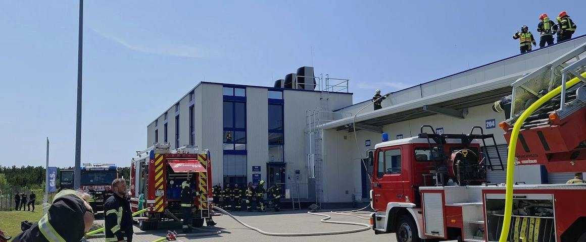

24/7 - 365 Tage im Jahr
Wir gehen für Sie durchs Feuer.
Aktuelles, Einblicke und Informationen finden Sie direkt auf Facebook und Instagram.
Freiwillige Feuerwehr

24/7 - 365 Tage im Jahr
Aktuelles, Einblicke und Informationen finden Sie direkt auf Facebook und Instagram.